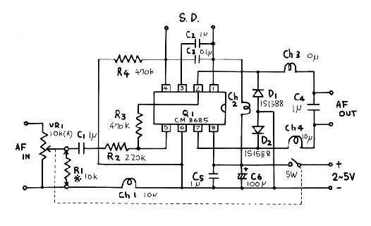

QRPの機械を作っていると電源にはほとんど乾電池を使いますね。 最近では電池2本つまり2.4Vから３V程度の電圧で働く素子が沢山出回って
来ました。 しかし、電池2本ではスピーカをがんがんならすと云う訳にはなかなかいきませんでした。
しかし最近、電池2本でスピーカをがんがんならすというICが現れたのです。 Champion Microelectronic
Corporation 社のD級アンプ、CM8685というICです。(D級アンプについて詳しく知りたい方は「D級アンプ」をクリックしてください)
まずカタログに書いてある能書きを紹介しましょう。
(1)電源 2V~5.0V
(2)出力5W(SP4Ω、電源5V)
(3)周波数特性 20Hz~20kHz
(4)8pin PSOP&PDIP Package(フラットタイプとLM386と同じ8ピンの2種類)
(5)Power MOSFETs(ON抵抗が220mΩと非常に低い)
(6)ヒートシンク不要(内部抵抗が低いので発熱しない)
(7)電源効率90%
(8)AB級アンプに匹敵する音質(THD+N<0.6%@PO1W,4Ω、f1kHz)
(9)低音特性を確保するための大容量のコンデンサが不要
(10)シャットダウン電流1μA(ミュート回路の電流)
(11)無入力時の消費電流3mA
(12)発熱時のプロテクション回路内臓
CM8685を使ったD級アンプの回路図を第１図に示します。 製作に入る前に回路の説明をしておきましょう。
|  |
|
|
CM8685の内部は入力アンプを構成するアナログ領域とD級アンプを構成するディジタル領域が混在しています。それら2つの領域に電源を供給す るために電源回路がちょっと複雑になっています。 そこのところを分かりやすくするために電源部だけを第2図に取り出してみました。
|
|
|
|
電源電圧は2~5Vです。平滑コンデンサとしてC5とC6があります。その後でディジタル領域の電源となります。 アナログ領域の電源は
+,- 共 Ch1,2を通ったものを使用します。IC内部でのアナログのアースはPin -3
ですが、ここはC2の1μFを通してアナログのプラス電源につながっています。
高周波チョークは「オーディオ信号は通すがRF信号は通さない」と云う原則を頭に入れておけば何とか理解出来ると思います。
ICのオーディオ(MUSIC)入力インピーダンスは220kΩと非常に高い設計になっています。受信機等の内部に一体化して作る場合はそのまま の入力インピーダンスで使用出来ますが、一旦外部に引き出された信号を処理する場合は接続時に大きなクリックを生じますので10kΩでシャントできるよう にしてあります。その抵抗がR1です。 このR１はVR1を取り付ける場合は不要となります。
ICに取り入れられたAF信号はIC内部で自動的にPWMの信号に変換され、互いに逆位相の信号2つに分けられて終段部のC MOS FETで増幅されます。 PWMを作るためのクロック周波数は大体560kHz付近です。
出力は560kHz付近のPWMですからその中のオーディオ信号を取り出すために積分回路に通します。Ch3,4とC４がそれです。 Di1,2
はディジタル信号がRFCを通る際に発生する逆起電力を吸収するもので、これがないとICを破壊することがあります。
スピーカにはその両端に逆位相の信号を加えて音として取り出します。
第３図に示す専用プリント基板がついていますので第４図を参考に回路を組み上げてください。
CM8685は C MOS FET を内蔵していますから念のため静電気には注意して扱ってください。
|
|
|
|
|
|
(1)消費電流はカタログ通り3mAでした。小さな音で良ければ3mAのままでも音として聞くことが出来ます。 5mAから10mAも流せば単３ 電池2本と云う音にきこえます。 入力の電圧を大きくして行くと加速度的に消費電流は大きくなります。しかし、テスターで電流を計ろうとするとその内部抵 抗が邪魔をしてシャックリ現象が起きてしまいました。 大きな音で鳴らそうと思ったら同じ3Vでも内部抵抗の低い電池(単2,単１電池、アルカリ電池また はNiCd,NiMH電池等)の使用が望ましいようです。
(2)目一杯大きな音を出してもICそのものは全然熱くなりませんでした。
(3)ディジタル回路ですのでノイズの発生を心配しましたがラジオをごく近くにもって行った時560kHz付近で若干「ジャ−」という感じのノイ ズが聞こえましたが50cmも離れると聞こえなくなりました。 この付近の周波数の受信を目的とする場合は気を付けなければなりませんが、実際にラジオを 聞いた感じでは特に問題は無さそうです。
(4)入力レベルは一応「ライン入力」レベルです。普通のラジオやカセットレコーダー等スピーカやヘッドホンがなるレベルであれば十分ドライブ出 来ますが、ゲルマラジオの出力ではちょっと足りないかも知れません。
(5)しかし、入力インピーダンスが非常に高いので入力は電圧さえあれば電力的には小さくても結構です。
(6) 4Pin はシヤットダウン回路と云ってICの働きをとめる端子です。この端子を+電源につなぐことによって出力は遮断されます。スケルチ回路等に利用できるでしょ う。
(7)Di1,2は必ず付けてください。ICの内部構造に保護ダイオードが入っていたので逆起電圧吸収用のダイオードはいらないだろうと勝手に解
釈して試作回路を作りました。 これでとりあえずはまともに働いたのですが、入力信号を入れたまま電源を切った所ICが破損してしまいました。
このICは使用経験がまだ浅いので何がおこるか良く分かっていません。製作にあたってはソケットを使用する事をおすすめします。 とは言えなかなか大し
たICだと思います。
(8)先にも述べましたがこの回路はアースの概念が一般の回路と異なっております。 シヤーシ−アースはアナログ、ディジタルどちらのアースでも 出来ますが、他の回路と共存する場合は十分気を付けて実施してください。